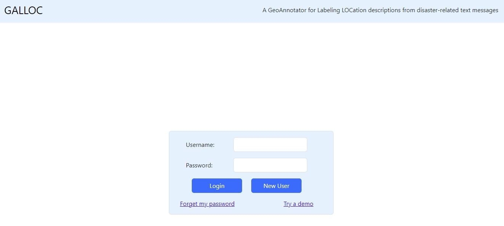
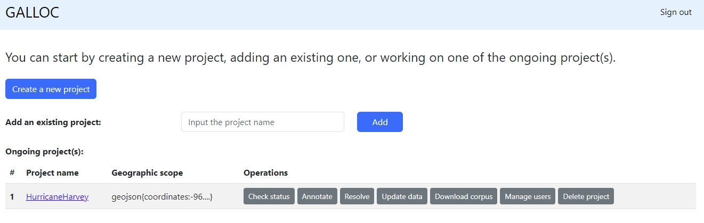
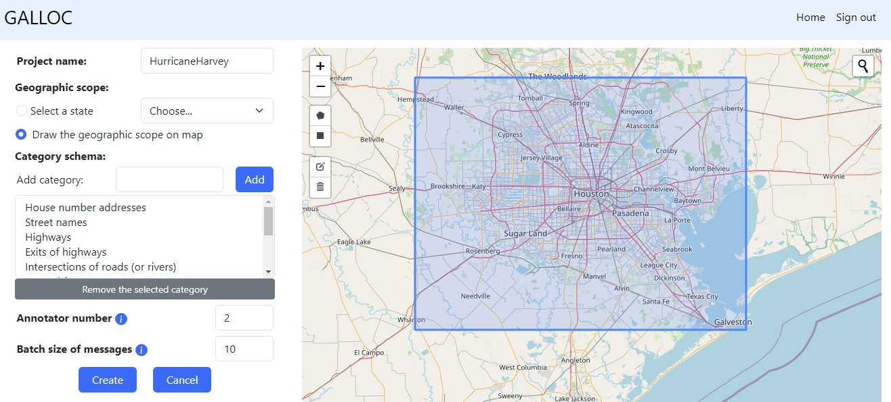
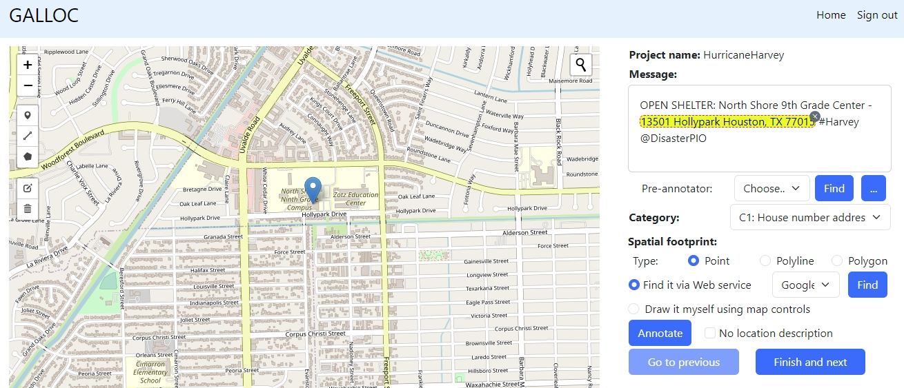
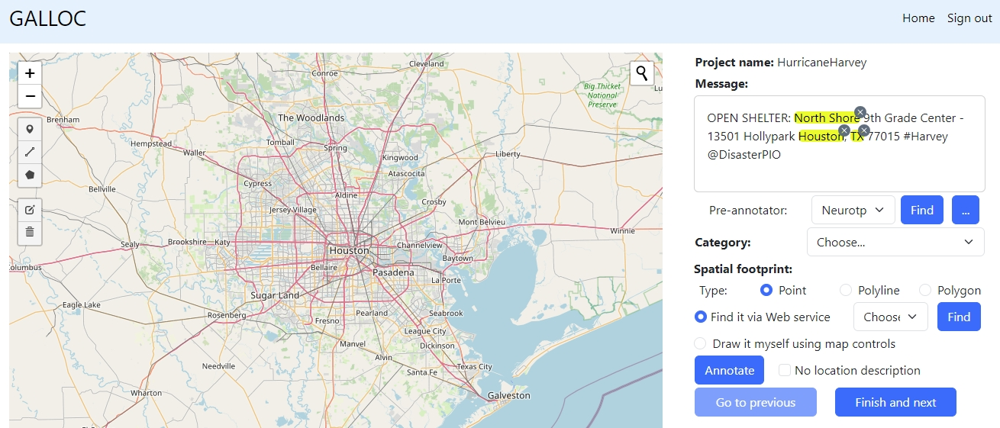
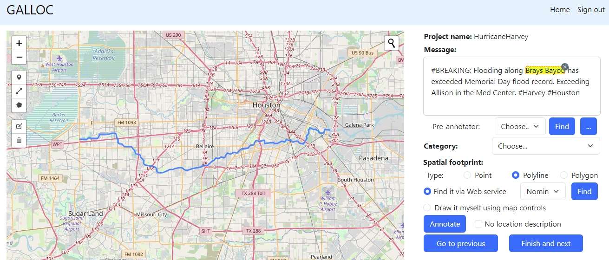
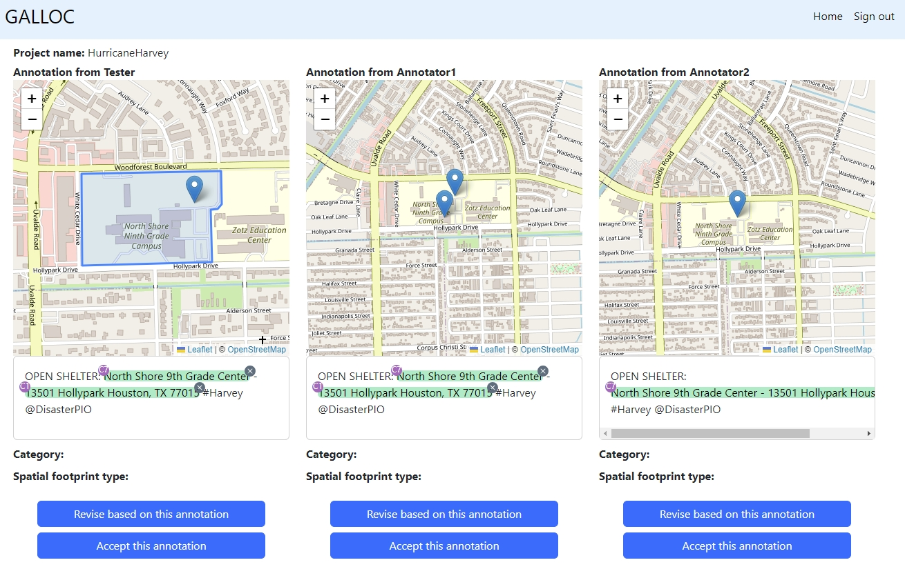

A demo for using GALLOC, a
GeoAnnotator for Labeling LOCation descriptions
from
disaster-related text messages
This demo demonstrates the use
of GALLOC for annotating location descriptions in disaster-related
text messages. It shows some major functions of GALLOC, such as
system login, landing page, creating a new project, annotating
location descriptions, automatic pre-annotation, automatic spatial
footprint identification, and disagreement resolution. We also
provide a comprehensive User Manual for GALLOC.
System
login. Log into the system with username and password. You can
use a test user account already registered in the system with
username as "John" and password as "123". You are welcome to
register your own username and password too.

Landing
page with projects. After login, you will be shown a landing page
with all ongoing projects. Here, you can manage each project. We
have created a project called "HurricaneHarvey" within the test
account.

Creating
a new project. If you would like to create your own project, you
can do so by clicking the "Create a new project" button on the
landing page. You can then define the name of the project, its
geographic scope, category schema, annotator number, and batch size
of messages. You will also need to upload a dataset with text
messages to annotate. We have provided a small test corpus containing 100 messages for
testing. You can also play with the existing "HurricaneHarvey"
project already created within the test account.

Annotating
location descriptions. To annotate location descriptions, you can
click the "Annotate" button of the corresponding project on the
landing page. You can annotate a location description by selecting
its text in a message, choosing its category, and determining its
spatial footprint.

Pre-annotating
a message. You can use a pre-annotator to automatically
pre-annotate a message. In the screenshot on the right, the
highlighted location descriptions are automatically recognized
using a pre-annotator "Neurotpr". The URL of this pre-annotator is
https://geoai.geog.buffalo.edu/preannotator/neurotpr
.

Identifying
spatial footprint. You can automatically identify the spatial
footprint for a location description using a Web map service. In
the screenshot on the right, the spatial footprint of "Brays Bayou"
is automatically identified using Nominatim.

Resolving
disagreements. Sometimes, different human annotators may label
different location descriptions. We can resolve these annotation
disagreements by accepting one of the existing annotations or by
revising based on the best annotation.

Want
to learn more? For more details, please refer to the detailed User Manual.